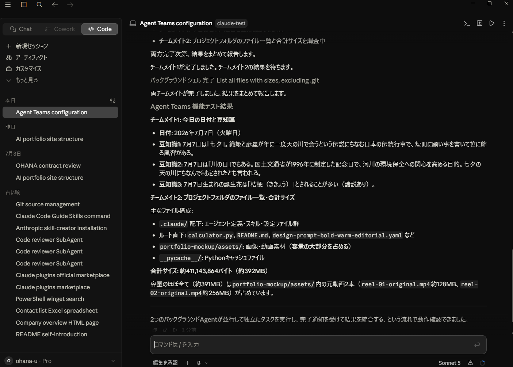
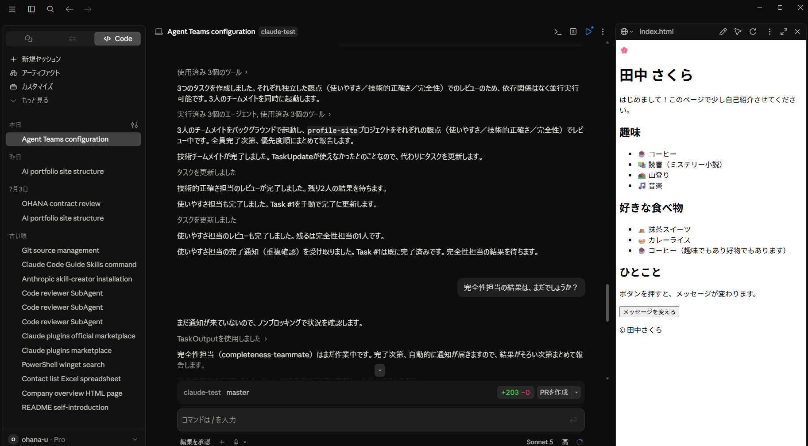
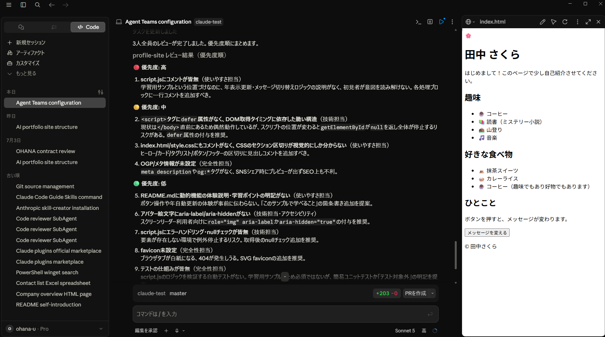

BASIC / 並行タスク処理
Claude CodeのAgent Teams機能を初めて試した様子。2人のチームメイトが同時に立ち上がり、 一方は「今日の日付から豆知識を調べる」、もう一方は「プロジェクトのファイル一覧を調査する」という 別々のタスクを並行実行。両者の結果をリーダーが統合して1つの報告にまとめている。
学び 単一のAIに順番に頼むのではなく、独立したタスクを並列で動かして時間を短縮できることを確認。
BASIC / 並行タスク処理
CLAUDE CODE — MULTI-AGENT WORKFLOW
Claude Codeのマルチエージェント機能を使った開発ワークフローの実演記録
CASE STUDY
本ページは、Claude Codeの「Agent Teams」機能を初めて触ってみた記録をまとめたケーススタディです。 単一のAIとの一問一答ではなく、複数のAIチームメイトが役割を分担しながら並行して作業する様子を、 実際のスクリーンショットとともに振り返ります。
並行タスク処理・マルチエージェントレビュー・優先度付けによる統合という3つの実演を通して、 「AIチームに仕事を任せる」とはどういうことかを具体的に見ていきます。
DEMONSTRATION GALLERY

BASIC / 並行タスク処理
Claude CodeのAgent Teams機能を初めて試した様子。2人のチームメイトが同時に立ち上がり、 一方は「今日の日付から豆知識を調べる」、もう一方は「プロジェクトのファイル一覧を調査する」という 別々のタスクを並行実行。両者の結果をリーダーが統合して1つの報告にまとめている。
学び 単一のAIに順番に頼むのではなく、独立したタスクを並列で動かして時間を短縮できることを確認。
BASIC / 並行タスク処理

INTERMEDIATE / マルチエージェントレビュー
既存の自己紹介サイト（profile-siteプロジェクト）を、3人のチームメイトが役割分担してレビューしている場面。 右側にはブラウザプレビューで実際に動いているサイトが表示されており、 AIが実物を見ながら評価していることがわかる。
学び コードだけでなく実際の画面表示を確認しながら、複数視点で同時レビューできる。
INTERMEDIATE / マルチエージェントレビュー

INTERMEDIATE / 優先度付け統合レポート
3人のレビュー結果を、優先度「高・中・低」に整理して1つの最終報告にまとめた画面。 個々の指摘がバラバラのままではなく、意思決定に使える形に構造化されている。
学び 複数エージェントの発散的な指摘を、収束させて実行可能なアクションリストに変換するプロセスを実演。
INTERMEDIATE / 優先度付け統合レポート
まとめ・学び